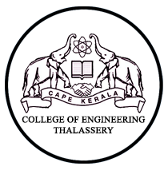

|  |
|
Thalassery, the cradle of colonial legacy is known for its scenic beauty and prominence in the educational field from ancient times itself.
The College of Engineering Thalassery, established in the year 2000.
The foundation stone was laid by Sri E.K Nayanar, the then Honorable Chief Minister of Kerala.
The new building complex of the College was officially inaugurated by Sri. M.V Raghavan,
the then Honorable Minister of Co-operation and Ports in the year 2004.
It is located at Kundoormala, Eranholi (West Ponniam) 6.5 km east of Thalassery town in Kannur District.
The college is situated on a hilltop with a view of Arabian Sea on one side and the Western Ghats on the other.
The site is easily accessible by road.
One can alight at the Thalassery bus stand and catch one of the frequent buses to Kuthuparamba and alight at Nayanar road.
Those traveling by train should alight at Thalassery Railway Station and get the bus to Kuthuparamba from the Thalassery Bus Stand.
The sprawling campus spread over 25 acres of land provides an ideal atmosphere for the pursuit of knowledge.
The College is affiliated to APJ Abdul Kalam Technological University (KTU) and Cochin University of Science and Technology (CUSAT).
The College Offers B.Tech courses in the following six Engineering streams and MBA course under Cochin University of Science and Technology.
Admission to this college is purely based on the Common Entrance Examination (CEE) conducted by the Govt. of Kerala.
The students of this college are getting top ranks right from the first batch itself among the colleges under CUSAT.
This college is the choice of top rank holders in the CEE.
This college has made a distinction in discipline, quality teaching and in excellence of students.
The Courses offered at B.Tech level are Civil Engineering, Computer Science & Engineering, Electronics & Communication Engineering,
Electrical & Electronics Engineering, Information Technology and Mechanical Engineering.
The duration of course for B.Tech is four academic years as prescribed in the curriculum.
University examinations will be conducted at the end of the each semester.
The eminent team of faculty carves out best in every student as they leave shells to face the outer world.
The institute also aims at personal development of the students to the best extend by training them so as to be competent as par with international standards.
Through quality education the institution aims to make them to excel in all-round activities for themselves and for the society.
An excellent career guidance and placement unit is functioning in the college with the objective of providing career guidance and placement opportunities to the students. The Principal and all other faculty members have extended their whole hearted support to the functioning of the unit which acts as a morale booster to career conscious students and concentrates on multi dimensional personality development of the students.
The unit nurturs industry-readyness and employability of the graduates.